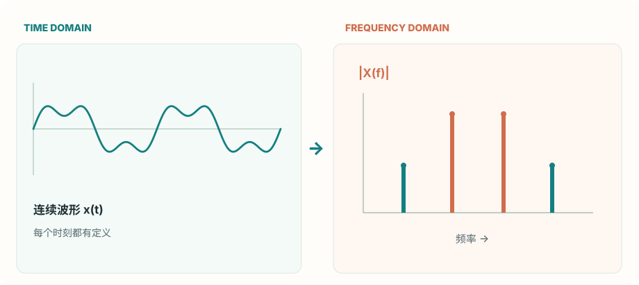

A visual field guide / DSP
从波形到算法，理解信号如何变成信息。
从一段连续声波开始，经过采样、系统响应、频域变换和滤波设计，逐步建立可推导、可实验的数字信号处理知识体系。

用结构理解，而不是记忆符号。
每一章从具体问题出发：先看可观测的信号现象，再识别系统机制，最后用公式和小实验验证。前十三篇已采用新式逐步图解；其余篇章保留现有内容，并计划分批复核与升级。
Your learning path
知识地图
共 28 章
01 / 信号与系统基础
先理解离散序列、时不变系统与采样，再进入复频域。
02 / 频域与数字滤波
用频率、DFT、FFT 与滤波器组织信息。
03 / 多速率与统计方法
从采样率转换到随机信号、自适应算法与时频分析。
CHAPTER 12深度重构
多速率信号处理 (一)
抽取 · 内插 · 多相分解
阅读章节 ↗CHAPTER 13深度重构
多速率信号处理 (二)
滤波器组 · CIC滤波器 · 半带滤波器
阅读章节 ↗CHAPTER 14原版内容
统计信号处理基础
随机信号 · 相关函数 · 功率谱密度
阅读章节 ↗CHAPTER 15原版内容
自适应滤波器
Wiener滤波 · 梯度下降 · LMS
阅读章节 ↗CHAPTER 16原版内容
高级自适应算法
RLS · Kalman滤波 · 阵列信号处理
阅读章节 ↗CHAPTER 17原版内容
谱估计进阶
AR模型 · Burg算法 · MUSIC
阅读章节 ↗CHAPTER 18原版内容
时频分析
STFT · 小波变换 · Wigner-Ville
阅读章节 ↗04 / 算法的工程实现
把公式变为可测量、可部署、可调试的代码与硬件。
05 / 真实世界的 DSP
音频、通信、图像、学习系统及综合项目。
CHAPTER 23原版内容
音频信号处理
均衡器 · 动态范围压缩 · 回声消除
阅读章节 ↗CHAPTER 24原版内容
通信数字信号处理
数字上下变频 · 符号同步 · 信道估计
阅读章节 ↗CHAPTER 25原版内容
图像信号处理
2D卷积 · JPEG压缩 · 边缘检测
阅读章节 ↗CHAPTER 26原版内容
AI+DSP融合
DDSP · 自动编码器降噪 · 神经声码器
阅读章节 ↗CHAPTER 27原版内容
软件无线电 (SDR)
GNU Radio · RTL-SDR · Zynq SDR
阅读章节 ↗CHAPTER 28原版内容
综合项目：实时音频处理器
需求分析 · 算法设计 · 平台部署
阅读章节 ↗